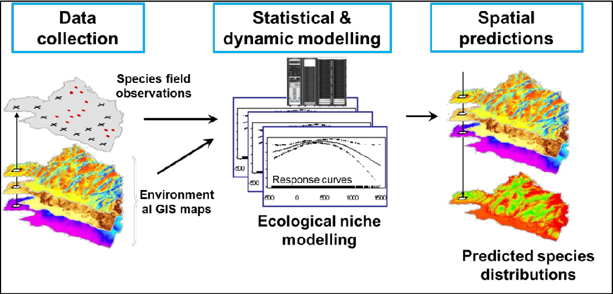

Proyecto Final (IMSE1017)
Preparación de datos para generar un modelo de distribución de especies (MDE)
1 Introducción a los Modelos de Distribución de Especie (A. Lee-Yaw et al. 2022)
Modelar la distribución de las especies y la demografía de las poblaciones es un pilar de la ecología. En teoría, se espera que las especies se encuentren en lugares donde las condiciones permitan que las tasas de crecimiento poblacional sean estables o positivas (Pulliam 2000). Dentro de este conjunto de condiciones, se espera que ambientes más favorables resulten en un mayor exceso de nacimientos (por ejemplo, mayor supervivencia y éxito reproductivo de los individuos) y, por lo tanto, se espera que la abundancia y la aptitud media de la población aumenten positivamente con la idoneidad del hábitat (Brown 1984). Las poblaciones grandes son menos propensas a la pérdida de alelos debido a la deriva genética (Frankham 1996; Leimu et al. 2006; Mccusker y Bentzen 2010) y, por lo tanto, la idoneidad del hábitat (a través de efectos sobre el tamaño de la población) también puede influir en la cantidad de diversidad genética dentro de las poblaciones (Eckert, Samis, y Lougheed 2008), que a su vez puede retroalimentarse para influir en la persistencia de la población (Agashe 2009).
Una forma de hacer predicciones sobre la demografía de la población es utilizar información sobre las condiciones ambientales que subyacen a la ocurrencia de especies (es decir, presencia o presencia-ausencia) para modelar el nicho ecológico (o parte del mismo) de una especie de interés (Peterson et al. 2011). En adelante utilizamos el término modelo de distribución de especies (MDE) para referirnos a este enfoque. En algunos casos, el resultado de un MDE se trata como probabilidad de ocurrencia y la proyección espacial del modelo se utiliza para hacer predicciones sobre la distribución de las poblaciones. En otros casos, el resultado del modelo se trata como idoneidad relativa del hábitat, ya sea debido a decisiones tomadas durante la construcción del modelo (Peterson y Soberón 2012) o por convención (ver Elith et al. (2011) para el tratamiento del resultado máximo), y luego se utilizan predicciones para hacer inferencias sobre diferencias potenciales en el desempeño demográfico de las poblaciones en todo el espacio. Un atractivo importante de estos modelos es que solo requieren un conjunto de registros de localidad y los datos ambientales correspondientes para generarlos, los cuales a menudo están disponibles gratuitamente. Por lo tanto, ha habido un interés creciente en utilizar estos métodos para inferir parámetros poblacionales que son difíciles de medir directamente (Vaz, Cunha, y Nabout 2015).
2 Contexto
2.1 Fuentes de Datos Climáticos
Un formato muy utlizado para trabajar con información climática es el raster, hoy existen multiples productos de estimaciones de variables climáticas a diferentes resoluciones espaciales y temporales. Producto del avance en el desarrollo de modelos climáticos e imagenes satelitales, es posible contar con estimaciones basadas en modelos climáticos, interpolaciones espaciales, o combinaciones de ambas. Uno de estos productos, es el Reanalisis climático de ERA5-Land (ECMWF Re-Analysis Land), el que provee de variables climáticas y atmosféricas para todo el planeta. Este productos utiliza modelos numéricos océano-atmósfera junto con redes de estaciones climáticas globales para estimar las diferentes variables ambientales.
2.2 Fuentes de Datos de Especies
iNaturalist es un proyecto de ciencia ciudadana y red social en línea de naturalistas, científicos ciudadanos, y biólogos basada en el concepto de mapeo e intercambio de observaciones de biodiversidad a través del mundo. Se puede acceder al proyecto a través de su sitio web o de sus aplicaciones móviles. Las observaciones realizadas con iNaturalist proporcionan datos abiertos valiosos a proyectos de búsqueda científica, agencias de conservación, otras organizaciones, y el público en general. El proyecto se ha denominado como “un estándar-portador para historia natural aplicaciones móviles.”
iNaturalist.org comenzó en el 2008 como proyecto final de posgrado de Nate Agrin, Jessica Kline, y Ken-ichi Ueda para la Universidad de California en Berkeley. Nate Agrin y Ken-ichi Ueda continuaron trabajando en el sitio con Sean McGregor, un desarrollador web. En 2011, Ueda empezó una colaboración con Scott Loarie, un socio investigador en la Universidad Stanford y conferenciante en UC Berkeley. Ueda y Loarie son los actuales codirectores de iNaturalist.org. La organización se fusionó con la Academia de California de Ciencias el 24 de abril de 2014. En 2014, iNaturalist celebró su millonésima observación. En 2017, iNaturalist se convirtió en una iniciativa conjunta entre la Academia Ciencias de California y la Sociedad Geográfica Nacional.
2.3 Preparación de la información para el MDE
De acuerdo a lo que se describe los MDE nos permiten identifcar las zonas en las que hay probabilidades de que se encuentre una especie (Spatial Predictions Figura 1). Para poder realizar esto, en primer lugar hay que identificar la o las especies para las que se quiere realizar un MDE. Luego, hay que reunir información de dónde hay presencia de la especie. En este sentido, la fuente de información de iNaturalist pone a disposición datos sobre las especies y la coordenada espacial en la que se encuentra (Species field observations, Figura 1). El MDE se utilizará para poder espacializar la presencia-ausencia (en un raster) en dónde no se tiene información de la presencia-ausencia de la especie (Spatial predictions, Figura 1). Como información que permita al MDE reconocer su hábitat, se utilizan variables ambientales (clima, elevación, etc) que están espacialmente distribuidas (datos raster).
Para las variables ambientales se utilizan fuentes de datos raster, por ejemplo los datos climáticos de ERA5-Land. Los datos de iNaturalist nos entregan las coordenadas en donde hay evidencia de que hay presencia de la especie. Por otra parte, es difícil contar con evidencia de la ausencia de la especies, por lo que la práctica habitual es generar puntos aleatorios en el entorno dónde se quiere aplicar el MDE, estos puntos se denóminas de pseudo-ausencia. Con esto, se tendrá un set de puntos con ausencia y pseudo-ausencia de la especie distribuidos en el entorno dónde se quiere aplicar el MDE (Species field observations, Figura 1). El paso siguiente es seleccionar las variables raster que pueden permitir al MDE identificar el hábitat dónde se encuetra la especie (variables predictoras). Por último, antes de aplicar em MDE, hay que extraer la información de las variables predictoras en la ubicación de los puntos de presencia y pseudo-ausencia. Con esto se generará una tabla con \(n\) número de observaciones (filas) de acuerdo a la cantidad de puntos que se tenga y con \(m\) variables (columnas) de acuerdo a la cantidad de variables predictoras se hayan seleccionado.

3 Objetivo del proyecto
Generar un script en R paso a paso, que permita generar un data.frame en el que se tengan los datos de las \(n\) presencia-ausencia y \(m\) variables predictoras, para la especie Frickius Variolosus en el sur de Chile.1 Deberá trabajar principalmente con {terra} (Hijmans 2023), {sf} (Pebesma 2018) y {tmap} (Tennekes 2018).
4 Datos que debe utilizar
Planilla
Excelcon datos de presencia deFrickius Variolosus: Se entrega una planilla que contiene las coordenadas en donde se ha identificado la presencia de la especie. Para descargar pinche acáDatos climáticos
ERA5-Land: Se entregan seis años de datos mensuales de precipitación acumulada mensual y temperatura promedio mensual. Para descargar pinche acáDatos de elevación: Para descargar datos de elevación en
Rlos puede hacer utilizando el paquete {geodata} yla funciónelevation_global.
5 Lo que debe hacer
Crear un objeto
sfde tipo polígono que defina la extensión del aŕea de estudio. Esta debe ir desde la latitud \(-38,075\) y longitud \(-74,00\) a latitud \(-48,00\) y longitud \(-70,75\).A partir de la planilla con las coordenadas de presencia de la especie
Frickius Variolosus, debe crear un objetosfcon geometrias de tipo puntos. Haga un gráfico de la ubicación de los puntos en el área de estudio.Debe crear 100 puntos de pseudo-ausencia de la espeice, estos deben ser creados de forma aleatoria y deben estar dentro del área de estudio. Utilice la función de
{sf}st_sample.Cree áreas de influencia de 250m en cada uno de los puntos de presencia de
Frickius Variolosus. Utilice estas áreas de influencia para eliminar los puntos de pseudo-ausencia que se encuentran a menos de 250m de uno de presencia.Una los puntos de pseudo-ausencia seleccionados con los de presencia. Debe quedar con un sólo set de datos de puntos, estos deben tener un atributo denóminado
presenciaque sea1para las observaciones de presencia y0en los puntos de pseudo-ausencia.Debe cortar los datos climáticos raster de temperatura media y precipitacion acumulada mensual para el área de estudio.
Con los datos raster climáticos cortados para el área de estudio, debe crear promedios de precipitación acumulada mensual y temperatura media mensual, entre los años 2017 al 2022. Como resultado debe obtener un raster con 12 capas para precipitación acumulada mensual y otro raster multicapa de 12 capas para temperatura media mensual.
Descargue la elevación global utilizando la función
elevation_globalde{geodata}. Corte el raster de elevación para el área de estudio. Haga un resampleo (funciónresampleen {terra`}) de la elevación a la resolución de los datos climáticos.Una los raster en un raster multicapa, con 25 capas, 12 de precipitación, 12 para temperatura y una para elevación. Luego, extraiga los datos del raster en los pixeles de ubicación de los puntos de ausencia y pseudo-ausencia. Utilice la funcion
extractde{terra}. Con el resultado obtenido cree undata.frameque tenga los valores extraidos más la columna depresenciade los datos de presencia y pseudo-ausencia. Guarde eldata.frameen formatoRDS2 con la funciónwriteRDSy con el nombredatos_predictores.rds.
Debe crear mapas estáticos con grilla, leyenda, flecha norte y en coordenadas UTM de acuerdo al huso que corresponda. Debe crear un mapa para cada variable predictora (precipitación, temperatura, elevación). En el caso de precipitación y temperatura deben ser mapas con 12 paneles, para cada mes del año. Cada mapa debe mostrar los puntos de presencia y pseudo-ausencia en el que se pueda identificar cuál es cuál. Los mapas los debe crear utilizando
{tmap}.Utilice las escalas de colorviridispara precipitación einfernopara temperatura; ambos del paquete{viridis}. Para elevación utilice los colores que permite obtener la funciónterrain.colorsde R-base. Exporte cada mapa a una imagen en formatoPNGcomomapa_estatico_pf_precipitacion.png,mapa_estatico_pf_temperatura.pngymapa_estatico_pf_elevación.png.Cree un raster en el que se calcule el promedio anual con los datos de temperatura promedio mensual (2017-2022). Cree un raster en el que se calcule la precipitación acumulada anual, con los datos de precipitación promedio mensual 2017-2022.
Debe crear un mapa interactivo en el que se muestre el raster de precipitación acumulada anual, temperatura promedio, elevación y la ubicación de los puntos de presencia y pseudo-ausencia. Debe utilizar las mismas escalas de color que en el mapa estático. El mapa lo debe exportar a un archivo
mapa_interactivo_pf.html
6 Lo que debe entregar
Debe crear un script en R de forma muy ordenada y con comentarios en cada sección, de forma que se vaya explicando en el script que es lo que se fue haciendo y por qué.
7 Fecha de entrega
1 de diciembre 2023 hasta las 23:59
8 Referencias
Notas
No se aplicará un MDE, sólo se preparará la información que permita posteriormente la aplicación de un MDE.↩︎
Este es un tipo de archivo nativo de R que puede almacenar cualquier objeto a un archivo en nuestro disco duro. Además, RDS comprime los datos que almacena, por lo que ocupa menos espacio en disco duro que otros tipos de archivos, aunque contengan la misma información.↩︎